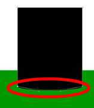

Gopher Masking Tutorial
Created: January 16, 2015
This simple masking example of a gopher was created in the course Web Design 2, following this video tutorial by YouTube user John McMullen. Through the use of a mask, the illusion of the gopher emerging from the "hole" in the ground and then descending back down is created. The real science behind it is selecting a specific portion of the stage, and only allowing the image to show up in that region. In this example, that specific area is the space above the black oval, as pictured in the image on the right, and the image is the gopher.
